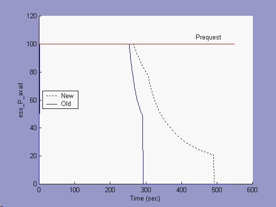
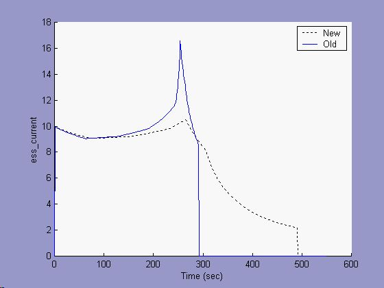

Figure 1: Constant current discharge, Li-Ion battery with 10/15 minute rest

Figure 2: Constant current discharge, Lead Acid battery with 30 minute rest
Introduction
ADVISOR’s previous battery model was based on an equivalent circuit model of the battery, with a voltage source and an internal resistance, and an SOC measure based on a Peukert-derived capacity as a function of average current. Through battery testing and validation performed at NREL, it became apparent that there were limitations in the battery model. To more closely represent battery behavior as experimentally observed, the battery model has been updated. This new model is referred to as ‘New’ below, and the previous model as ‘Old.’
The new model has four differences from the old model:
The most significant updates are the new SOC algorithm and the temperature modeling. On a straight discharge, the SOC update can have as much as a 30% effect on SOC. During a cycle, the updated model tends to increase performance (fuel economy) by as much as 12% for a series vehicle. Temperature modeling had the effect of increasing performance (FE) by up to 4%, depending on the battery technology.
New to Old Model Comparison
The old model significantly under predicted the energy available from a given battery. The [Peukert](glossary.html#Peukert’s%20Equation)-limited capacity was an artifact of the battery hitting the lower voltage limit during discharge. In the laboratory, when the battery hit its lower voltage limit for a high rate of discharge, there was still significant capacity remaining in the battery. To extract this residual capacity, the current request was simply dropped such that the lower voltage limit was not exceeded.
Two representative constant-current discharges for two battery technologies are presented below. In Figure 1, a lithium-ion battery was discharged at a high rate (90A and 30A), allowed to rest for 10/15 minutes, then discharged at a lower rate (1A and 3A). In Figure 2, a lead-acid battery was discharged at a high rate (10A and 15A), allowed to rest for 30 minutes, then discharged at a lower rate (1A). The new and old SOC models were simulated using the experimental current profiles, and the graphs compare the two results.
Figure 1: Constant current discharge, Li-Ion battery with 10/15 minute rest
Figure 2: Constant current discharge, Lead Acid battery with 30 minute rest
There are several important points to note about Figure 1 and Figure 2:
A constant power discharge is another way to see the effects of the new battery model. In Figures 3-6 below, a constant power of 100W was requested of a 1Ah lead acid battery, and the results of both the new and old battery models are presented. Figure 1 shows that for the first 280 seconds, the available power met the requested power. Figure 4 and Figure 5 show that during this time, the current and voltage varied. The open circuit voltage dropped with SOC (see Figure 6), and the operating voltage was a function of both the OCV and the discharge resistances (as they also varied with SOC). The current adjusted to meet the power request.

Figure 3: Constant power discharge, Lead Acid battery, Available Power
For the old model, close to 280 seconds the SOC gets very low, the voltage drops substantially, and the current spikes. Soon, the battery is unable to meet the power request, and the available power is seen to exponentially drop away (Fig. 3) until there is no energy left and the available power is zero. During the power-decay section (~280-295 seconds), Figure 5 shows that the voltage stayed near 6 V. This was because the maximum output power possible lay at half the open circuit voltage.

Figure 4: Constant power discharge, Current
The new model incorporates a minimum battery voltage limit in addition to a constant capacity equal to the maximum Ah capacity of the battery. The onset of power-limited behavior seen with the new model occurs near 290 seconds. This is slightly later than the old model, because the maximum capacity is greater than the avialable capacity predicted by the Peukert model at this ~10C discharge rate. The current in Figure 4 for the new model does not spike, and Figure 5 shows that the voltage was limited to the setpoint of 9.5 V.

Figure 5: Constant power discharge, Voltage
Figure 6 shows the final impact of the new battery model. The new model shows that the battery had capacity to output power for 500 seconds, while the old model stopped short of 300 seconds. Where the old model stopped, the new model showed that there was 20% SOC remaining in the battery.

Figure 6: Constant power discharge, SOC
Last Revised: 7/21/00:AB